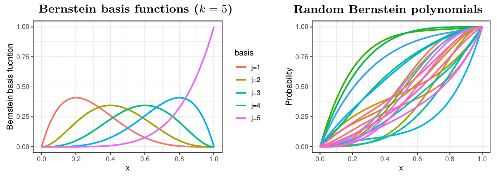

이 연재는 필자의 박사학위 논문 Bayesian Analysis of Nonstationary Extremes (Lee, 2022, University of Edinburgh)의 1.2절(Background)을 우리말로 옮기고 다듬은 것이다.
앞 글의 디리클레 과정 혼합은 실수 전체에서 정의된 밀도를 추정하는 데 쓰였다. 그러나 극단값 이론에서 다루는 스케다시스 밀도나 각도 밀도처럼 관심 대상이 단위구간 \([0,1]\) 같은 유계 영역 위의 분포인 경우가 많다. 랜덤 번스타인 다항식(random Bernstein polynomials) 은 유계 지지집합 위의 분포함수 공간에 사전분포를 주는 랜덤 확률측도이다 (Petrone, 1999a,b; Petrone and Wasserman, 2002).
번스타인 다항식
폐구간 \([0,1]\) 위의 연속함수 \(G\) 가 주어졌을 때, \(G\) 의 \(k\) 차 번스타인 다항식은
\[ B(y;k,G)=\sum_{j=0}^kG\!\left(\frac jk\right)\binom kj y^j(1-y)^{k-j} \]
로 정의된다. 각 항은 번스타인 계수 \(G(j/k)\) 와 번스타인 다항식 기저함수의 곱이다. \([0,1]\) 에서 유계인 함수 \(G(y)\) 에 대해
\[ \lim_{k\to\infty}B(y;k,G)=G(y) \]
가 \(G\) 의 모든 연속점 \(y\) 에서 성립하고, \(G\) 가 연속이면 균등하게 성립한다 (자세한 내용은 Lorentz, 1986 참고).
\(G\) 와 \(k\) 가 확률적이면 번스타인 다항식 \(B(\cdot;k,G)\) 는 랜덤 확률측도 \(\pi\) 를 생성하며, 이를
\[ \pi\sim\Pi(k,G) \]
로 표기한다. \(G(0)=0\) 이면 번스타인 다항식의 도함수는 다음과 같은 베타 밀도의 혼합이다.
\[ b(y;k,G)=\sum_{j=1}^kw_{j,k}\,\beta(y;j,k-j+1). \tag{1}\]
여기서 \(w_{j,k}=G(j/k)-G((j-1)/k)\), \(j=1,\ldots,k\) 이고, \(\beta(\cdot;a,b)\) 는 모수 \(a\), \(b\) 를 갖는 베타 밀도이다. 차수 \(k\) 는 혼합에 쓰이는 베타 성분의 개수를, 가중치 \(w_{j,k}\) 는 각 소구간 \(((j-1)/k,j/k]\) 에 \(G\) 가 주는 확률을 뜻한다.

번스타인–디리클레 사전분포
\(\pi\) 를 번스타인 다항식이 유도하는 확률측도라 하자. \(k\) 가 양의 정수 위의 확률질량함수 \(p(k)\) 를 따르는 확률변수이고, \(G\) 가 디리클레 과정 \(\mathrm{DP}(\alpha,G_0)\) 에서 유도된 랜덤 분포함수, 즉
\[ \pi\sim\Pi(k,G),\quad G\sim\mathrm{DP}(\alpha,G_0) \]
이면, \(\pi\) 를 번스타인–디리클레 사전분포(Bernstein–Dirichlet prior, BDP) \(\pi(p,\alpha G_0)\) 라 한다. 디리클레 과정의 넓은 약 지지 성질과 마찬가지로, \(\pi\) 도 완전한 약 지지를 가짐을 보일 수 있다. \([0,1]\) 위의 임의의 연속분포 \(Q\) 와 \(\varepsilon>0\) 에 대해
\[ \pi\left(\left\{G:\sup_x|G(x)-Q(x)|<\varepsilon\right\}\right)>0 \]
이다.
계층모형과 잠재변수
추론을 위해 다음 계층모형을 생각하자.
\[ \begin{aligned} k&\sim p(k),\quad G\mid k\sim\mathrm{DP}(\alpha,G_0),\\ \mathbf W\mid k,G&\sim\mathrm{Dir}(a_{1,k},\ldots,a_{k,k}),\\ Y_i\mid k,\mathbf W&\overset{\text{i.i.d.}}{\sim}b(y;k,G). \end{aligned} \]
여기서 \(\mathbf W=(W_{1,k},\ldots,W_{k,k})\) 이고, \(\mathrm{Dir}\) 은 모수 \((a_{1,k},\ldots,a_{k,k})\) 를 갖는 디리클레 분포이며 \(a_{j,k}=\alpha\{G_0(j/k)-G_0((j-1)/k)\}\) 이다.
그러나 \((k,\mathbf W_k\mid y_1,\ldots,y_n)\) 의 사후분포는 일반적으로 계산하기 어렵다. 그래서 보조 확률변수 \((Z_1,\ldots,Z_n)\) 을 도입하여 계층모형에 단계를 하나 더 둔다.
\[ Y_i\mid Z_i\sim\beta(y;j,k-j+1)\quad\text{if}\quad Z_i\in\left(\frac{j-1}{k},\frac jk\right],\quad j=1,\ldots,k. \]
보조변수 \(Z_i\) 는 \(Y_i\) 가 방정식 1 의 혼합에서 어느 성분으로부터 나왔는지를 나타낸다. 수정된 계층모형은 다음과 같다.
\[ \begin{aligned} k&\sim p(k),\quad G\mid k\sim\mathrm{DP}(\alpha,G_0),\\ Z_i\mid k,G&\overset{\text{i.i.d.}}{\sim}G,\quad i=1,\ldots,n,\\ Y_1,\ldots,Y_n\mid k,G,Z_1,\ldots,Z_n&\sim\prod_{i=1}^n\sum_{j=1}^k\beta(y_i;j,k-j+1)\,\mathbb 1_{((j-1)/k,\,j/k]}(Z_i). \end{aligned} \]
이렇게 하면 잠재변수 \(Z_i\) 가 주어졌을 때 \(G\) 의 조건부 분포는 앞 글의 디리클레 과정 사후분포 결과를 그대로 쓸 수 있고, \(k\) 와 \(Z_i\) 는 깁스 샘플링으로 차례로 갱신할 수 있다.
주요 참고문헌
- Lorentz, G. G. (1986). Bernstein Polynomials. Chelsea Publishing Company.
- Petrone, S. (1999a). Bayesian density estimation using Bernstein polynomials. Canadian Journal of Statistics, 27, 105–126.
- Petrone, S. (1999b). Random Bernstein polynomials. Scandinavian Journal of Statistics, 26, 373–393.
- Petrone, S. and Wasserman, L. (2002). Consistency of Bernstein polynomial posteriors. Journal of the Royal Statistical Society: Series B, 64, 79–100.